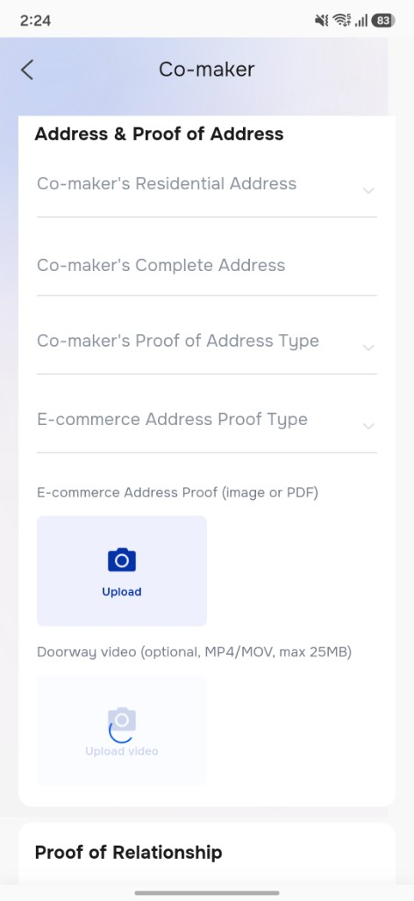
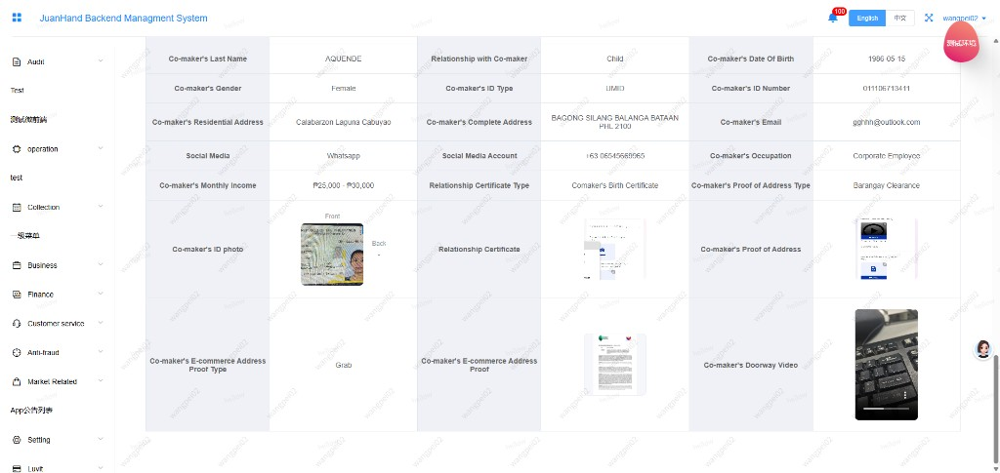
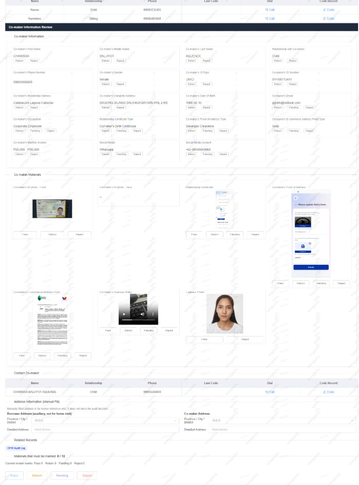

担保人填资新增电商地址证明和门口视频；销售可以代填，人审可以审核并补录地址，方便贷后找到担保人。
完整规则见需求文档位置：Co-maker 页 →「Address & Proof of Address」模块，在原有地址证明下方新增 3 个字段。本土、海外流程一致。
| 新增字段 | 是否必填 | 填写 / 上传方式 | 格式要求 |
|---|---|---|---|
| 电商地址证明类型E-commerce Address Proof Type | 必填 | 单选：Grab / Shopee / Lazada / Foodpanda | 审核标准由贷后与人审共同约定 |
| 电商地址证明E-commerce Address Proof | 必填 | 图片或 PDF | |
| 门口视频Doorway video | 选填 | MP4 / MOV，最大 25MB |

位置：Backend 用户详情 → Co-maker 资料，新增展示电商地址证明类型、电商地址证明、门口视频。
和现有担保人资料同一套规则，不单独开权限。必填规则与 APP 一致：类型必填、电商地址证明至少 1 个图片或 PDF、门口视频选填。
与现有担保人资料相同：终审填资、人审退回等销售可以改担保人资料的时候，这 3 项可以一起改。
只放开被人审标记的项。门口视频被 Pending 时，由销售补传。

位置：审核详情 → Co-maker Information Review。审核标准由贷后与人审共同约定。
| 审核项 | 可选结论 | 说明 |
|---|---|---|
| 电商地址证明类型Co-maker Information | 退回 / Pending / 拒绝 | 与其他担保人字段一致 |
| 电商地址证明Co-maker Materials | 通过 / 退回 / Pending / 拒绝 | 与现有证件材料一致 |
| 门口视频Co-maker Materials | 通过 / 退回 / Pending / 拒绝 | 没上传不挡通过，也不计入「必须标记」的材料；需要时可以标 Pending，让销售补传 |
| Mother's Maiden Name | 新增可 Pending | 本土、海外都支持；Pending 后销售可改，退回 / 拒绝规则不变 |
